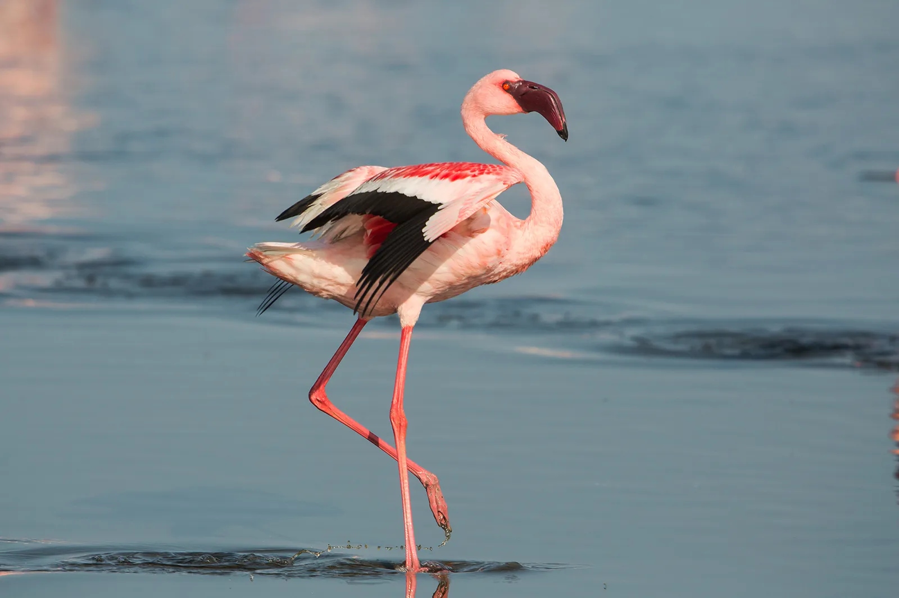

Flamingo
राजहंस


The name "flamingo" derives from the Spanish and Portuguese word flamenco, itself rooted in the Latin flamma, meaning flame, a reference to the bird's fiery pink plumage. In Sambhar itself, local legend ties the lake's origins to the goddess Shakambhari, worshipped at a temple near the town, who is said to have transformed a barren tract into a silvery saline expanse later developed into brine pans by the Chauhan rulers; the flamingo's seasonal arrival on these same saline waters has long been woven into the area's folk identity as a sign of the monsoon's reach. The bird's association with Sambhar is thus as much cultural shorthand for the lake's wetland character as it is a matter of ornithological record.
The greater flamingo belongs to the family Phoenicopteridae and is the most widespread and largest of the six extant flamingo species, standing up to about 1.5 metres tall with a wingspan exceeding 1.5 metres. At Sambhar it shares habitat with the smaller lesser flamingo (Phoeniconaias minor), and the lake's recognition as a Ramsar wetland of international importance in 1990 rests substantially on its role as a key wintering and staging ground for these and other migratory waterbirds arriving via the Central Asian Flyway. Sambhar's listing as an Important Bird Area by BirdLife International further underscores the ecological weight attached to its flamingo congregations, which rank among the largest inland gatherings of the species in India.
Feeding is the flamingo's most distinctive biological trait: the bird holds its oddly downturned bill upside down in the shallow brine and uses comb-like lamellae along the mandibles to filter out blue-green algae, diatoms and brine shrimp, the carotenoid pigments in this diet producing the plumage's signature pink and salmon tones. Flamingo numbers at Sambhar fluctuate sharply with rainfall and lake-water levels, since the birds require a specific depth of saline water to feed effectively; surveys have recorded swings from roughly 5,000 birds in the early 1990s to an estimated 50,000 following a strong monsoon in 1982, with more recent counts, such as over a lakh of migratory waterbirds logged in a January 2025 census, reflecting similarly wide variation year to year. The species also breeds occasionally on isolated mud islands within the lake when conditions are favourable.
The flamingo's dependence on a stable wetland was thrown into sharp relief in November 2019, when an outbreak of avian botulism, a paralytic illness caused by the bacterium Clostridium botulinum thriving in the lake's degraded, oxygen-poor shallows, killed more than 18,000 migratory birds at Sambhar, with flamingos and other waterfowl among the species affected. Investigators from the Indian Veterinary Research Institute linked the die-off to reduced freshwater inflow and rising salinity, conditions aggravated by decades of unregulated salt extraction and encroachment around the lake bed. The episode drew national attention to the fragile balance between Sambhar's salt industry and its function as critical flamingo habitat.
In the years since, state forest and wildlife departments, together with conservation groups such as the Wildlife Trust of India, have worked on monitoring water quality, regulating illegal brine pumping and restoring inflow channels to safeguard the lake's bird populations, even as Sambhar continues to yield roughly 196,000 tonnes of salt annually under the Sambhar Salts Limited undertaking. Birdwatchers now visit the lake's margins, particularly around the Gudha and Naliasar sections, during the post-monsoon months when flamingo flocks are at their most visible, making the species a recurring seasonal draw for the wetland alongside its continuing industrial role.
| Date of Introduction | December 27, 2025 |
|---|---|
| Address | Senior Postmaster, |
| Sambhar Lake HO, | |
| Jaipur (dt.), Rajasthan - 303604. |